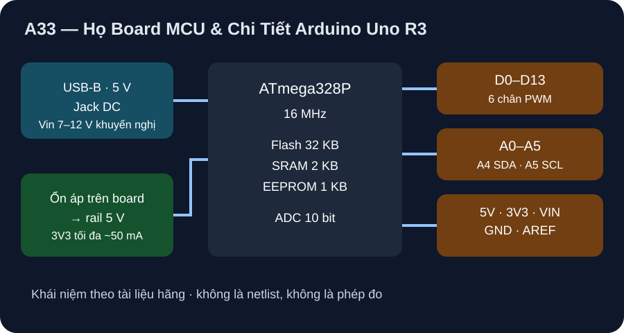

Họ Board MCU & Chi Tiết Arduino Uno R3
Nhìn tổng quan các họ board, rồi đi sâu một board mẫu để tự suy ra cách đọc các board khác.
- Phân biệt năm họ board (AVR, Cortex-M, MCU có radio, STM32, MPU) theo lõi, mức logic và điểm cần cẩn thận.
- Đọc một board mẫu (Uno R3) theo thứ tự nguồn → lõi/bộ nhớ → chân/ngoại vi → giới hạn dòng, và tính ADC, LED, nhiệt ổn áp.
- Áp tám câu hỏi chuyển giao để tự phân tích board khác mà không suy giới hạn từ họ chip sang module khác.

Đọc hình bằng chữ
Nguồn vào là cổng USB hoặc jack DC 7 đến 12 volt khuyến nghị. Nguồn đi qua bộ ổn áp trên board tạo rail 5 volt cấp cho ATmega328P chạy 16 MHz, bộ nhớ flash 32 KB, SRAM 2 KB và EEPROM 1 KB. Bên phải là ba nhóm chân: D0 đến D13 gồm 6 chân PWM; A0 đến A5 là ngõ vào ADC 10 bit, trong đó A4 và A5 dùng cho I2C; cuối cùng là các chân nguồn 5V, 3V3, VIN, GND và AREF.
1. Bản đồ tổng quan: các họ board hay gặp khi học điện tử
Một “board” gồm chip vi điều khiển cộng nguồn, cổng nạp/USB, tụ, đầu nối và đôi khi module radio. Hai board cùng họ chip vẫn có thể khác nhau về nguồn và chân, nên bảng dưới chỉ để định hướng; số liệu cuối cùng luôn lấy từ tài liệu hãng theo mã board và revision (xem A24).
| Họ | Ví dụ | Lõi và mức logic thường gặp | Điểm mạnh khi học | Điểm cần cẩn thận |
|---|---|---|---|---|
| AVR 8 bit | Arduino Uno R3 (ATmega328P) | 8 bit; logic 5 V | Cấu trúc đơn giản, ít lớp trừu tượng, tài liệu hãng đầy đủ | Bộ nhớ nhỏ (SRAM 2 KB), ADC 10 bit, không có radio |
| ARM Cortex-M0+ | Raspberry Pi Pico (RP2040) | 32 bit; logic 3,3 V | Nhiều SRAM hơn, có MicroPython (A22–A23) | GPIO không chịu 5 V; LED GP25 chỉ có trên non-W |
| MCU có radio | Họ ESP32, ví dụ ESP32-C6-DevKitC-1 | 32 bit (Xtensa hoặc RISC-V); logic 3,3 V | Wi-Fi/BLE và nhiều ngoại vi | Dòng đỉnh khi phát sóng, chân strapping, khác biệt chip với module (A24) |
| STM32 | Board Nucleo/Discovery | 32 bit Cortex-M; thường 3,3 V | Họ rộng, công cụ chuyên nghiệp | Hàng trăm biến thể; phải đọc đúng mã chip và manual board |
| MPU/SBC | Raspberry Pi chạy Linux | Lõi ứng dụng cùng hệ điều hành | Mạng, camera, giao diện đồ họa | Không phải MCU thời gian thực cứng; nguồn và khởi động phức tạp hơn |
2. Vì sao chọn Uno R3 làm board mẫu
Bài này chọn Uno R3 vì bốn lý do học thuật, không dựa trên thống kê thị phần (không có nguồn kiểm chứng trong giáo trình): có tài liệu hãng chính thức (Arduino Uno Rev3, datasheet A000066); logic 5 V trùng mức của các mạch HC ở A17; đủ ngoại vi cơ bản (GPIO, PWM, ADC, UART, I²C, SPI); và không có radio nên ít biến số hơn. Sau khi nắm Uno, bạn dùng cùng khung câu hỏi ở mục 6 cho board khác.
3. Uno R3 từng lớp
Lớp 1 — nguồn. USB hoặc jack DC đi qua mạch ổn áp trên board tạo rail 5 V. Hãng khuyến nghị Vin 7–12 V và nêu giới hạn 6–20 V; chân 3,3 V chỉ cấp tối đa khoảng 50 mA. Lớp 2 — lõi và bộ nhớ. Chip ATmega328P chạy 16 MHz, flash 32 KB (0,5 KB bootloader), SRAM 2 KB, EEPROM 1 KB. Lớp 3 — chân. 14 chân số (6 PWM) và 6 ngõ analog.
| Mục | Giá trị |
|---|---|
| Vi điều khiển / xung | ATmega328P / 16 MHz |
| Điện áp làm việc | 5 V |
| Vin khuyến nghị / giới hạn | 7–12 V / 6–20 V |
| Dòng DC mỗi chân I/O | 20 mA (tài liệu board); datasheet chip nêu mức tuyệt đối cao hơn, không phải điểm vận hành |
| Dòng chân 3,3 V | 50 mA |
| Flash / SRAM / EEPROM | 32 KB (0,5 KB bootloader) / 2 KB / 1 KB |
| Chân số / PWM / analog | 14 / 6 / 6 |
| Nhóm | Chân | Ghi chú học tập |
|---|---|---|
| UART | D0 (RX), D1 (TX) | Dùng chung với cổng USB nạp/serial; tránh nối tải lên hai chân này khi nạp |
| Ngắt ngoài | D2, D3 | Đọc nút/cảm biến xung không cần thăm dò liên tục |
| PWM | D3, D5, D6, D9, D10, D11 | Điều sáng LED, điều khiển servo/động cơ qua tầng công suất riêng |
| SPI | D10 (SS), D11 (MOSI), D12 (MISO), D13 (SCK) | D13 còn nối LED trên board |
| I²C | A4 (SDA), A5 (SCL) | Chia sẻ chân với ngõ analog |
| ADC | A0–A5 | 10 bit; tham chiếu 5 V, chân AREF hoặc tham chiếu nội |
4. Bốn phép tính mẫu trên Uno
(a) ADC với tham chiếu 5 V. Một mã ứng với 5/1024 ≈ 4,88 mV. TMP36 ở 25 °C xuất 0,750 V (theo ADI TMP36 Rev. H) nên mã = ⌊0,750/5×1024⌋ = ⌊153,6⌋ = 153, T_est = (153×5/1024 − 0,5)/0,010 ≈ 24,71 °C. Mỗi mã tương ứng 0,488 °C: độ phân giải khá thô vì cảm biến chỉ dùng khoảng 8% thang đo.
(b) Tham chiếu nội 1,1 V (danh định). Cùng 0,750 V cho mã ⌊698,18⌋ = 698, T_est ≈ 24,98 °C, mỗi mã 0,107 °C; tới 60 °C (1,10 V) thì bão hòa. Nhưng 1,1 V chỉ là danh định: giả sử tham chiếu thật lệch ±0,1 V mà phần mềm vẫn dùng 1,1 V thì kết quả thành 32,5 °C hoặc 18,75 °C thay vì 25 °C. Giả định ±0,1 V là số đặt ra để thấy tác động, không phải dung sai chip; muốn chính xác phải đọc datasheet chip và hiệu chuẩn bằng phép đo (A28).
(c) LED. Từ 5 V, LED giả định V_F = 2 V và R = 330 Ω: I = (5−2)/330 ≈ 9,09 mA, thấp hơn mức 20 mA của tài liệu board. Sáu LED như vậy cộng thành 54,5 mA; đó mới là phép cộng, giới hạn tổng của chip và nguồn phải đọc riêng trong datasheet.
(d) Nhiệt ổn áp từ Vin. Giả sử ổn áp tuyến tính, P ≈ (Vin − 5)·I. Với 9 V và 100 mA là 0,40 W; với 12 V và 150 mA là 1,05 W. Vì thế hãng khuyến nghị 7–12 V thay vì dùng 20 V. Đây là mô hình, chưa phải phép đo nhiệt; đối chiếu schematic hãng khi cần chính xác.
5. Mã minh họa (chưa biên dịch)
Đoạn dưới chưa biên dịch và chưa chạy trên Uno thật; nó chỉ cho thấy API đọc TMP36 qua tham chiếu nội 1,1 V. Theo tài liệu Arduino, vài lần đọc đầu sau khi đổi tham chiếu có thể chưa chính xác nên nên bỏ qua.
const int PIN_TMP = A0;
void setup() {
analogReference(INTERNAL); // tham chiếu nội 1,1 V (ATmega328P)
Serial.begin(9600);
}
void loop() {
int raw = analogRead(PIN_TMP); // 0..1023
float v = raw * 1.1 / 1024.0; // volt, giả định đúng 1,1 V
float t = (v - 0.5) / 0.010; // TMP36 danh định
Serial.println(t);
delay(1000);
}6. Từ Uno sang board khác: tám câu hỏi chuyển giao
| Câu hỏi | Uno R3 | Pico (A22–A24) | Cách làm với board mới |
|---|---|---|---|
| 1. Mức logic? | 5 V | 3,3 V | Đọc datasheet; không nối 5 V vào chân 3,3 V |
| 2. Dòng mỗi chân? | 20 mA (board) | Theo datasheet RP2040/Pico | Tìm bảng dòng đúng chip và đúng board; không suy từ họ khác |
| 3. Nguồn vào? | USB hoặc Vin 7–12 V | USB/VSYS (A30) | Vẽ đường nguồn từ cổng vào tới rail logic |
| 4. ADC? | 10 bit; 5 V/AREF/1,1 V | 12 bit; VREF từ 3,3 V (A31) | Tính LSB = V_ref/2^N rồi ra độ phân giải đo |
| 5. Bus và chân? | Chân cố định | Nhiều chân gán lại được | Đọc bảng pinout đúng revision |
| 6. Bộ nhớ? | 32 KB / 2 KB / 1 KB | 2 MB flash board, 264 kB SRAM chip | Lập ngân sách như A24, ghi rõ chip hay board |
| 7. Cách nạp? | Bootloader qua USB | BOOTSEL và UF2 | Đọc hướng dẫn nạp của hãng |
| 8. Biến thể/clone? | Board clone có thể khác chip USB hoặc ổn áp | non-W khác W | Đối chiếu schematic đúng mã board bạn có |
Không có board Uno thật hoặc phép đo trong giáo trình; số liệu ở mục 4 là mô hình lý tưởng, kiểm bằng python tools/verify_phase10_uno_model.py. Cổng phần cứng nằm ở sổ chờ phần cứng.
Dùng Uno với tham chiếu 5 V đọc TMP36: tính kích thước một mã (mV), mã ở 25 °C (0,750 V), T_est và bước nhiệt độ mỗi mã; nêu một cách cải thiện độ phân giải và rủi ro đi kèm; rồi viết ba câu hỏi bạn sẽ đặt đầu tiên khi nhận một board lạ.
- 2 điểm: 5/1024 ≈ 4,88 mV; mã = 153; T_est ≈ 24,71 °C; bước ≈ 0,488 °C.
- 2 điểm: dùng tham chiếu nội 1,1 V (mã 698, bước 0,107 °C) hoặc khuếch đại tín hiệu.
- 2 điểm: rủi ro là tham chiếu danh định có sai số, cần hiệu chuẩn; tín hiệu bão hòa ở 60 °C.
- 2 điểm: ba câu từ bảng mục 6, ví dụ mức logic, dòng chân/nguồn, bits/tham chiếu ADC; không suy từ họ chip khác.